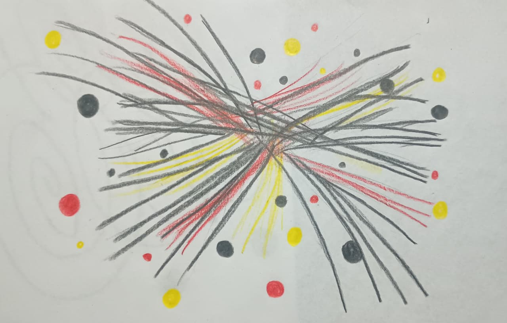
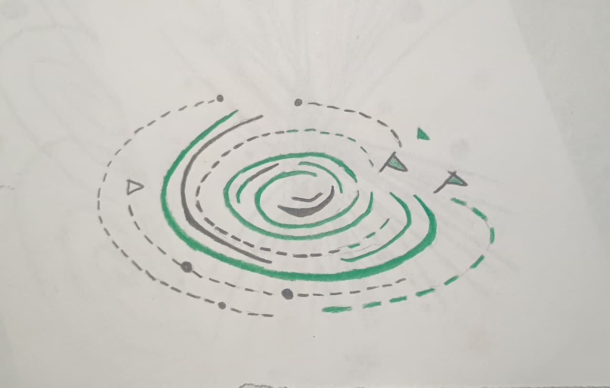

Tráfico matutino
El flujo de vehículos en hora pico
La ciudad se despierta con el ruido de los carros. Entre el rugido de los motores y el afán de las personas, se siente esa energía del mundo arrancando el día.
La sinfonía caótica del concreto y el movimiento constante
4 experiencias sonoras
La ciudad nunca deja de sonar. Desde que amanece hasta que cae la noche, vivimos rodeados de un paisajesonoro que moldea nuestra experiencia urbana. Muchas veces pasamos estos sonidos por alto, pero en realidad son el pulso constante de la ciudad.
La ciudad se despierta con el ruido de los carros. Entre el rugido de los motores y el afán de las personas, se siente esa energía del mundo arrancando el día.

El sonido de la ambulancia es un corte seco en la rutina. Su sirena aguda y constante atraviesa el ruido del tráfico, obligando a que todo lo demás se detenga por un momento.Es una alerta que no se puede ignorar, un grito mecánico que nos recuerda la urgencia y el valor del tiempo en medio del caos de la ciudad.

El pregón de los bananos es la voz que le da vida a la calle. Es un canto repetitivo y potente que se mezcla con el aire de la mañana, avisando que el mercado llegó a la puerta de la casa.Entre el sonido de la carretilla y el grito del vendedor, se crea una melodía propia del barrio que todos reconocemos sin necesidad de mirar por la ventana.